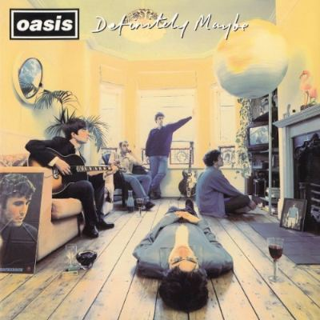
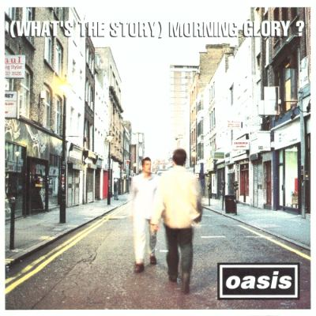
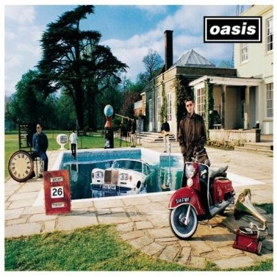
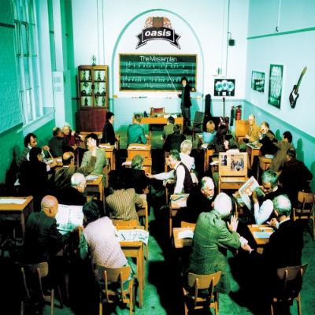
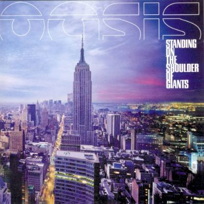
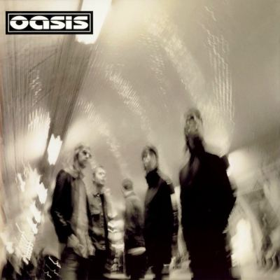
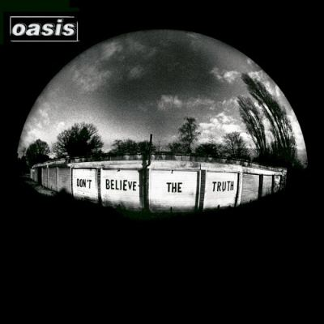
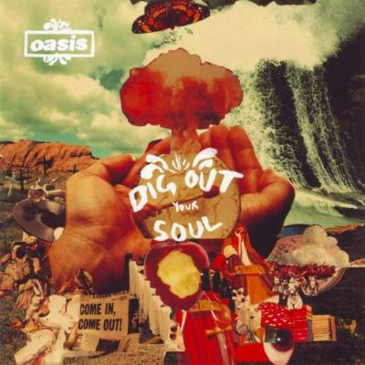

La regola di Noel
Quando entra nella band, Noel porta un repertorio e un piano preciso. Le canzoni diventano il centro di tutto; Liam, la voce impossibile da ignorare.
Dead People Activity presenta
Il ritorno continua. Quarantadue date, undici città e una storia cominciata a Manchester nel 1991 che non ha mai davvero smesso di fare rumore.
Aggiornato al 22 ottobre 2026 · Date soggette a variazioni
01 / Rotta 2027
Clicca i punti, filtra le tappe e attraversa il tour. Ogni città apre date, stadio e collegamento ufficiale.
“NON È NOSTALGIA
SE È ANCORA
VIVO.”
02 / Perché conta
Dopo la reunion e gli stadi del 2025, Live ’27 riporta gli Oasis nel cuore dell’Europa, negli Stati Uniti e nei luoghi che hanno costruito il mito. Manchester diventa una residenza. Knebworth riapre una ferita felice trentun anni dopo il 1996.
Questa pagina seguirà il tour fino all’ultima notte: nuove date, cambi di programma, biglietti e scalette verranno aggiornati insieme alla mappa DPA.
03 / La storia
Trentasei anni di Oasis in una linea: gli album, le notti che hanno fatto la storia, la rottura e il ritorno. Clicca una copertina per vedere la tracklist.
Liam Gallagher canta nei The Rain, che prendono il nome Oasis. A fine anno entra il fratello Noel: porta le canzoni e una regola, puntare a qualcosa di enorme.
Suonano quasi senza invito al King Tut’s Wah Wah Hut. In sala c’è Alan McGee di Creation Records: il contratto arriva poco dopo.

In quel momento è il debutto venduto più velocemente nella storia britannica. Cinque ragazzi di Manchester diventano la voce di una generazione.
Rock ’n’ Roll Star · Live Forever · Supersonic
Il disco che porta gli Oasis nel mondo. È l’anno della sfida in classifica con i Blur e delle canzoni che ancora oggi si cantano a squarciagola.
Wonderwall · Don’t Look Back in Anger · Champagne Supernova10 e 11 agosto: circa 250.000 persone nel parco di Knebworth e milioni di richieste di biglietti. Il punto più alto del Britpop.

Tutto più lungo, più forte, più grande. Nel Regno Unito diventa l’album venduto più velocemente di sempre fino a quel momento.
D’You Know What I Mean? · Stand by Me · All Around the World
La raccolta di B-side che dimostra quanto fosse ricco il periodo d’oro: canzoni “minori” che per molti sono tra le migliori.
Acquiesce · Talk Tonight · The Masterplan
Bonehead e Guigsy lasciano durante le registrazioni, arrivano Gem Archer e Andy Bell. Suoni più psichedelici: la band cambia pelle, il pubblico resta.
Go Let It Out · Who Feels Love? · Gas Panic!
Per la prima volta firmano canzoni anche Gem Archer e Andy Bell, accanto a Noel e Liam. Il disco della maturità.
The Hindu Times · Stop Crying Your Heart Out · Songbird
Il ritorno in forma: il disco più compatto dai tempi d’oro, con un tour mondiale enorme.
Lyla · The Importance of Being Idle · Let There Be Love
L’ultimo album in studio prima della separazione: più cupo, ritmico, pesante.
The Shock of the Lightning · I’m Outta Time · Falling Down28 agosto, Rock en Seine: una lite nel backstage annulla il concerto. Noel annuncia che non può più lavorare con Liam. Fine degli Oasis.
27 agosto 2024: dopo quindici anni i fratelli annunciano la reunion. Le richieste di biglietti travolgono i siti di vendita.
Il 4 luglio 2025 a Cardiff riparte tutto: stadi pieni nel Regno Unito, in Irlanda e nel resto del mondo, con cinque serate a Heaton Park, Manchester.
Glasgow apre il nuovo capitolo il 21 maggio. Poi Manchester, l’Europa, gli USA, Slane e il ritorno a Knebworth.
Copertine riprodotte a bassa risoluzione a scopo di cronaca e commento. Tutti i diritti appartengono ai rispettivi titolari.
04 / Gallagher files
Quando entra nella band, Noel porta un repertorio e un piano preciso. Le canzoni diventano il centro di tutto; Liam, la voce impossibile da ignorare.
La sfida nelle classifiche del 1995 diventa una guerra culturale costruita dai media: nord contro sud, working class contro art school.
Liam non canta; Noel prende il microfono. Il concerto diventa uno dei documenti più strani e memorabili della loro storia.
Una lite dietro le quinte chiude il tour e la band. Noel annuncia di non poter più lavorare con Liam.
Carriere separate, frecciate pubbliche e nessuna certezza. Il silenzio condiviso rende il ritorno ancora più grande.
La reunion non cancella la storia: la usa come carburante. Live ’27 è il secondo atto, non una replica.
05 / Domande frequenti
Sì. Sono previste tre date allo Stadio Olimpico di Roma: 26, 29 e 30 luglio 2027.
Il calendario ufficiale attuale comprende 42 date distribuite fra Regno Unito, Europa continentale, Stati Uniti e Irlanda.
Usa esclusivamente i canali indicati dal sito ufficiale Oasis e dalle pagine Ticketmaster collegate alle singole date.
No. Qualunque scaletta pubblicata prima dell'inizio del tour è una previsione, non una conferma ufficiale.
Fonti principali: Oasis Official · Calendario ufficiale · Ticketmaster. Pagina aggiornata man mano che escono nuove informazioni ufficiali.